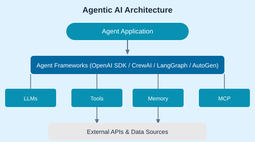
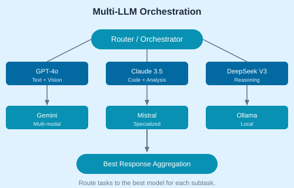

Start with a smart home demo to understand what agents are, then explore the frameworks landscape, career paths, and IDE setup for Windows and Mac.
| Pattern | Description |
|---|---|
| Agent Autonomy | Agents make decisions independently based on goals |
| Sequential Workflow | Step-by-step chain of LLM calls |
| Routing | Direct input to specialized sub-agents |
| Parallelization | Fan-out to multiple models simultaneously |

Compare GPT-4o, Claude, Gemini, DeepSeek. Each has strengths — route tasks to the right model.
# Multi-LLM router example
async def route_task(task_type, prompt):
if task_type == "vision":
return await call_gpt4o(prompt)
elif task_type == "code":
return await call_claude(prompt)
elif task_type == "reasoning":
return await call_deepseek(prompt)
else:
return await call_gemini(prompt)
Learn LLM function calling, tool handling, AI assistant patterns, and deploying agents to production. End with a career chatbot project.